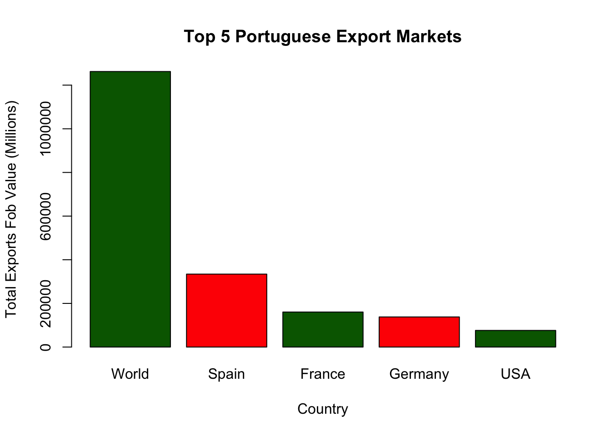
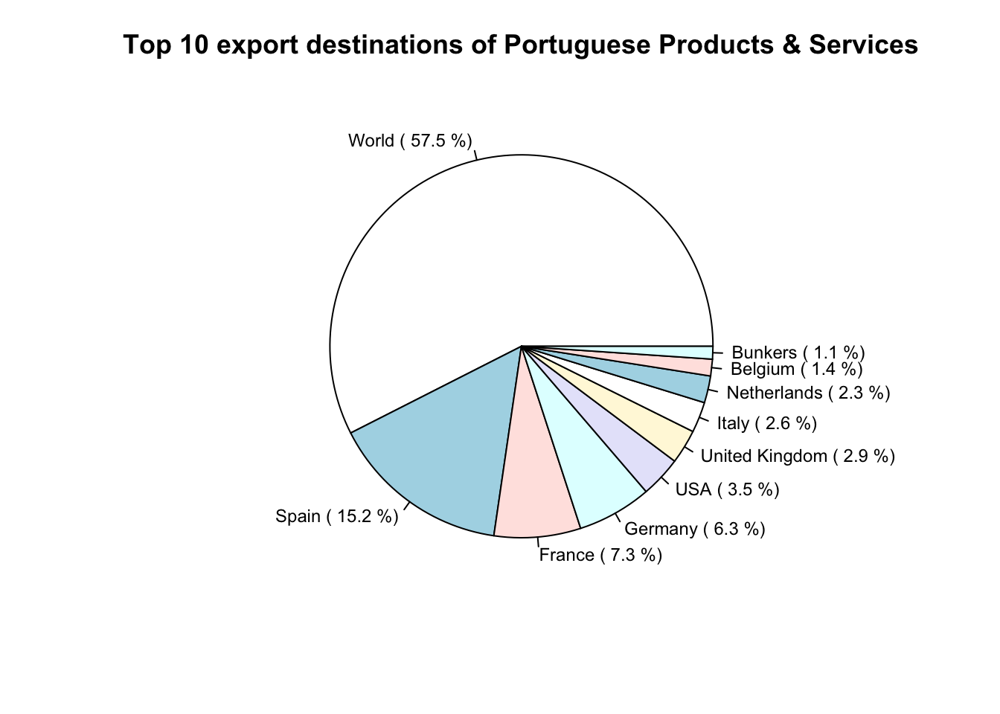
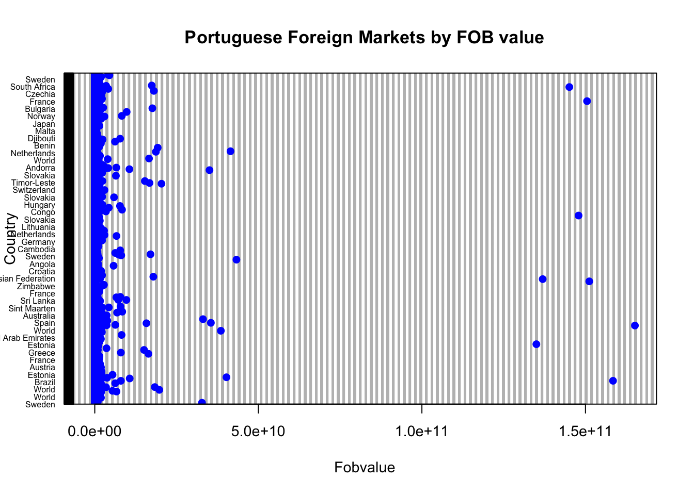

[1] "RefYear" "ReporterDesc" "PartnerCode" "PartnerISO" "PartnerDesc"
[6] "Partner2Code" "Partner2ISO" "Partner2Desc" "CustomsDesc" "Fobvalue"
[11] "PrimaryValue"Analysis of COMTRADE: A Comprehensive Overview
Nuno Calheiros Lobo
sad/govcopp
DEGEIT
University of Aveiro
ABSTRACT
This report presents a detailed analysis of the COMTRADE database, focusing on [brief summary of objectives, methods, key findings, and conclusions].
1 Introduction
1.1 Background
The COMTRADE is a United Nations comprehensive trade database containing [brief description of database content and purpose]. Understanding the patterns and trends within this database is crucial for [explain the significance of analysis].
1.2 Objectives
The objectives of this analysis are to:
Explore the characteristics and distribution of the data. Identify key trends, patterns, and relationships within the database. Draw insights and conclusions based on the analysis. # Methodology ## Data Collection The data for this analysis was obtained from [source of the database]. It contains [describe the nature and scope of the data].
1.3 Data Preprocessing
Prior to analysis, the data underwent the following preprocessing steps:
Cleaning: Removal of duplicate records and handling missing values.
Transformation: Conversion of data types and normalization of variables.
Filtering: Selection of relevant subsets of the data based on predefined criteria.
1.4 Analysis Techniques
The following analytical techniques were employed in this analysis:
Descriptive Statistics: Calculation of summary statistics and distributional measures.
Data Visualization: Creation of plots, charts, and graphs to visualize the data.
[Additional techniques as relevant to the analysis].
1.5 Software and Tools
The analysis was conducted using R/Rstudio for data manipulation, analysis, and visualization.
2 Results
2.1 Descriptive Statistics
[Summary statistics and key findings from descriptive analysis].
Subset of COMTRADE Variables used in this study
Pearson correlation coefficient (PrimaryValue vs Fobvalue)
[1] 1Summary
RefYear ReporterDesc PartnerCode PartnerISO
Min. :2021 Min. :620 Min. : 0.0 Length:12144
1st Qu.:2021 1st Qu.:620 1st Qu.:203.0 Class :character
Median :2022 Median :620 Median :372.0 Mode :character
Mean :2022 Mean :620 Mean :382.3
3rd Qu.:2022 3rd Qu.:620 3rd Qu.:616.0
Max. :2022 Max. :620 Max. :899.0
PartnerDesc Partner2Code Partner2ISO Partner2Desc
Length:12144 Min. : 0.0 Length:12144 Length:12144
Class :character 1st Qu.:196.0 Class :character Class :character
Mode :character Median :470.0 Mode :character Mode :character
Mean :453.4
3rd Qu.:724.0
Max. :899.0
CustomsDesc Fobvalue PrimaryValue
Length:12144 Min. :2.000e+00 Min. :2.000e+00
Class :character 1st Qu.:8.056e+03 1st Qu.:8.056e+03
Mode :character Median :1.199e+05 Median :1.199e+05
Mean :2.079e+08 Mean :2.079e+08
3rd Qu.:2.391e+06 3rd Qu.:2.391e+06
Max. :1.651e+11 Max. :1.651e+11 Average Foreign Market Value
[1] 2079081572.2 Data Visualizations
[Visual representations of key trends, patterns, and relationships in the data].
Barplot

Pie

Dotchart

2.3 Analytical Results
[Main findings and insights drawn from the analysis].
3 Discussion
3.1 Interpretation
[Interpretation of the results in relation to the research objectives and existing literature].
3.2 Implications
[Discussion of the implications of the findings and their significance for the field].
3.3 Limitations
[Identification and discussion of limitations or constraints of the analysis].
3.4 Future Directions
[Suggestions for future research or improvements to the analysis].
4 Conclusion
This analysis provides valuable insights into the [Database Name] and its implications for [relevant field or industry]. By exploring the patterns and trends within the database, we have identified [key findings]. Further research in this area could focus on [potential future directions].
References
[Provide a list of references cited in the report, following a specific citation style].